Un univers riche et fascinant, une intrigue captivante, une amitié indéfectible.
Partagez l'aventure de cinq jeunes dragons aussi valeureux qu'attachants. Une terrible guerre divise
les royaumes du monde de Pyrrhia. Selon une mystérieuse prophétie, seuls cinq jeunes dragons nés lors
de la Nuit-la-plus-Claire pourront mettre fin aux combats et apporter la paix. Mais les élus, Argil,
Tsunami, Gloria, Comète et Sunny, rêvent de voler de leurs propres ailes plutôt que d'accomplir leur
destin...
La Princesse Disparue
Après une courte visite au royaume de la Boue afin de s'enquérir sur la
famille d'Argil, c'est avec une horde de soldats Ailes de ciel à leurs trousses que les dragonnets du
Destin prennent la direction du royaume de la mer, puisque Tsunami serait la digne héritière de la reine
Corail. Là-bas, la jeune dragonne découvre un univers sous-marin qui lui était totalement inconnu, en
plus de rencontrer pour la première fois sa mère et sa jeune soeur lors de touchantes retrouvailles.
Quant aux quatre dragonnets, ils sont très peu estimés par la souveraine et mis au cachot.
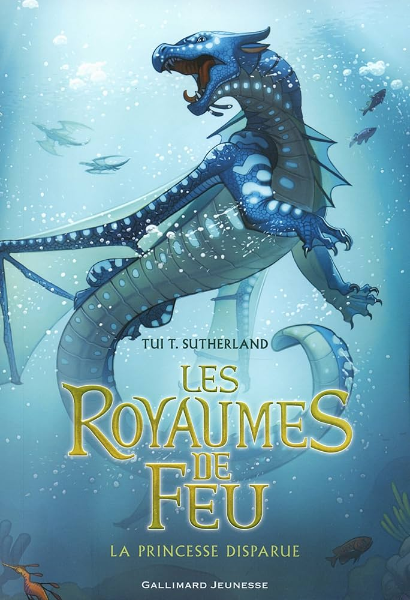
Au Coeur de la Jungle
En pénétrant dans la luxuriante forêt multicolore du Royaume de Pluie, les
Dragonnets du Destin espéraient trouver un répit - les lieux ont la réputation d'être pacifiques autant
que splendides. Mais rien ne se passe comme prévu: menace d'une mystérieuse créature, disparition de
dragons... Gloria décide de passer à l'action. Accompagnée de ses amis, elle s'enfonce dans la jungle...
et se retrouve en plein territoire ennemi !
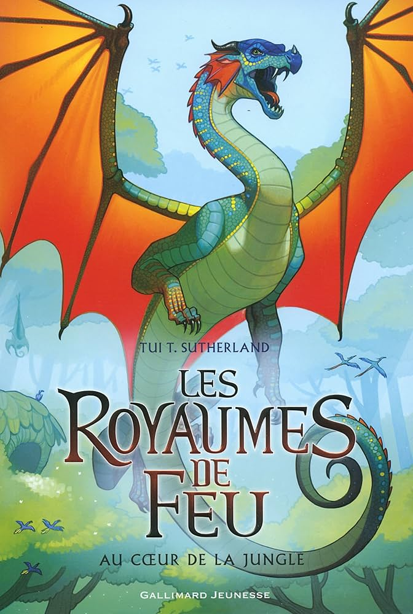
L'Île au Secret
Comète, capturé par son clan, se retrouve prisonnier dans le sombre et rocheux
royaume de Nuit. Il découvre avec consternation le comportement odieux des Ailes de Nuit, ainsi que leurs
plans sinistres concernant le royaume de Pluie. Comète doit prévenir ses amis, les autres Dragonnets du Destin.
Mais comment jouer les héros quand on est froussard et isolé sur une île volcanique? Le sort de deux royaumes
est entre ses griffes!
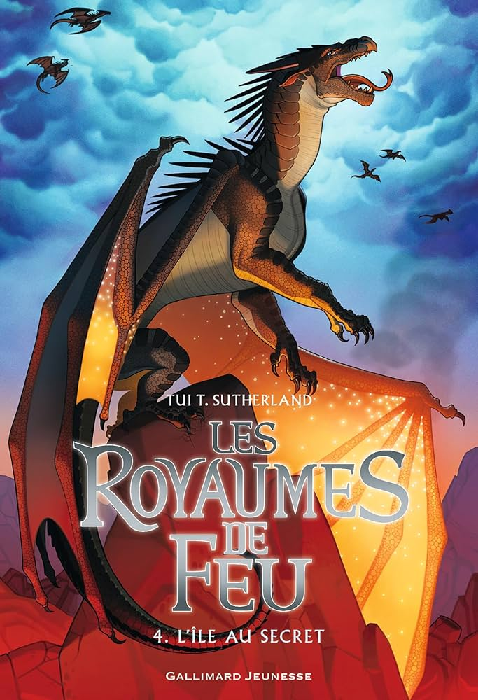
La Nuit-la-plus-claire
Sunny est effondrée: selon Loracle, la prophétie est fausse et les Dragonnets
du Destin ne pourront jamais mettre fin à la guerre. Pourtant, la petite Aile de Sable refuse de renoncer à
la paix, même si ses amis ne la prennent pas au sérieux. C'est donc seule que Sunny affronte sa destinée.
Mais une dragonnette naïve a-t-elle la moindre chance face à des adversaires sans pitié?
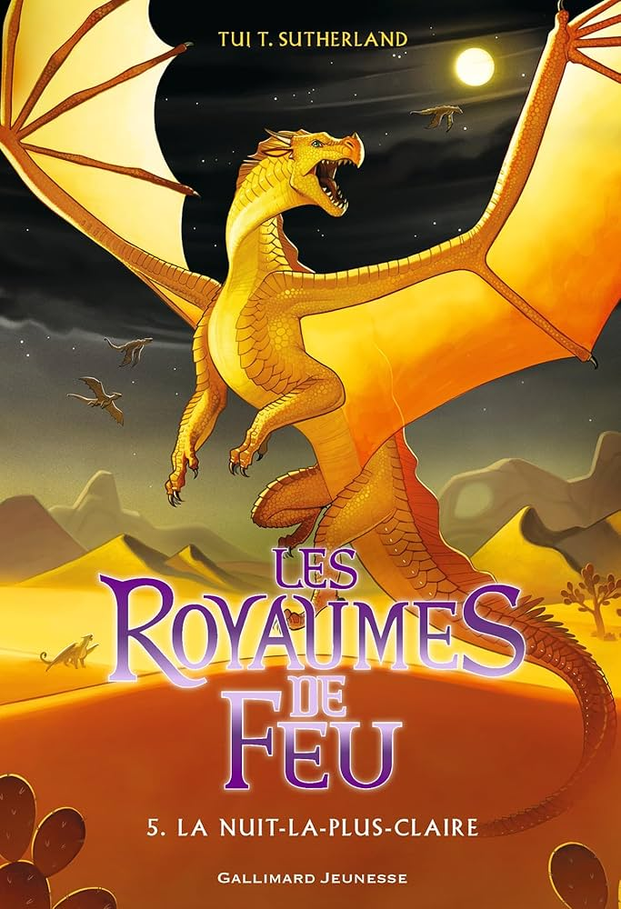
La Guerre des Clans
Retour à l'Etat sauvage
Depuis des générations, fidèles aux lois de leurs ancêtres, quatre clans de chats sauvages
se partagent la forêt. Mais le Clan du Tonnerre court un grave danger, et les sinistres guerriers de l'Ombre
sont de plus en plus puissants. En s'aventurant un jour dans les bois, Rusty, petit chat domestique, est loin
de se douter qu'il deviendra bientôt le plus valeureux des guerriers...
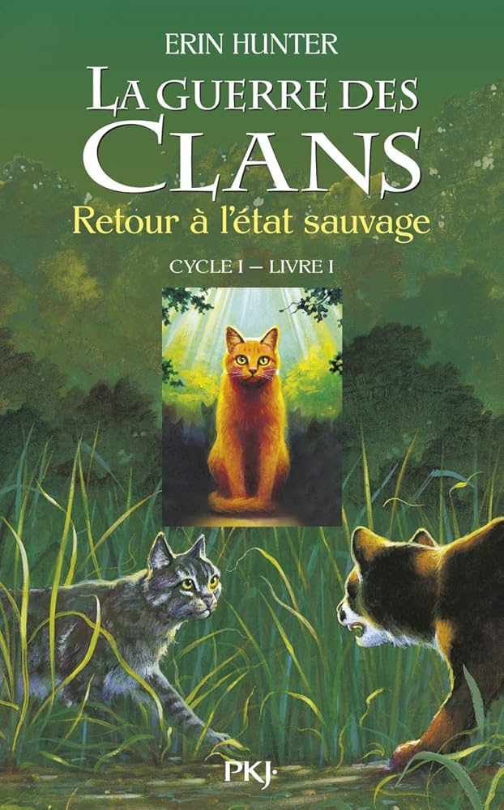
A Feu et à Sang
Au sein du Clan du Tonnerre, Coeur de Feu est devenu un valeureux guerrier. Une chance !
Il aura besoin de toutes ses forces pour déjouer les plans diaboliques de Griffe de Tigre qui cherche à lui nuire
et à l'exclure de son clan. Sans parler des accidents et maladies qui s'abattent depuis quelque temps sur sa tribu.
Lorsque le clan voisin, celui du Vent, est chassé de ses terres, sa méfiance grandit encore. Déchiré, Coeur de Feu
s'interroge : comment aider les autres quand on doit se défendre soi-même ?
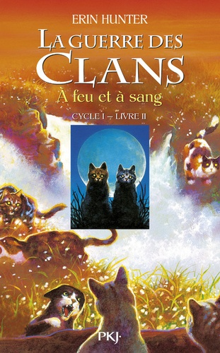
Les mystères de la Forêt
Crue dévastatrice, amours impossibles, secrets et trahisons ...La tension est à son comble dans
le Clan du Tonnerre : une terrible inondation s'abat sur la forêt et les alliances entre tribus changent sans cesse.
Quant à Coeur de Feu, il continue d'enquêter sur la mort de Plume Rousse, l'ancien lieutenant du clan. Il ignore
encore quelle sombre machination il va découvrir...
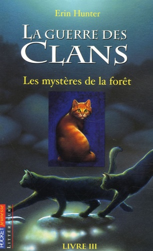
Avant la Tempête
Conflits, responsabilités, dangers... les temps sont durs pour Cœur de Feu. Heureusement, l'amour est
aussi au rendez-vous !Depuis la trahison de Griffe de Tigre, Cœur de Feu a pris de nouvelles responsabilités dans son clan.
Mais le traître rôde toujours. Cœur de Feu se sent plus seul que jamais. Heureusement, l'amour qu'il porte à la belle Tempête
de Sable le soulage du poids de ses lourdes tâches. Quand un danger terrible est sur le point de s'abattre sur la forêt,
Cœur de Feu va devoir à nouveau prouver sa valeur.
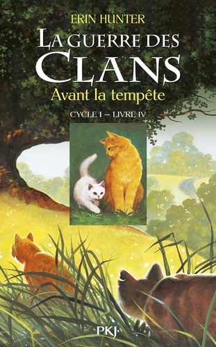
Sur le sentier de la Guerre
Vengeances, traîtrises, déclarations de guerre : la violence éclate dans la forêt. Cœur de Feu pourra-t-il
empêcher cette folie destructrice ? Jamais Cœur de Feu n'aurait pensé devoir affronter tant d'épreuves ! Après l'incendie
qui a ravagé la forêt, il se retrouve à la tête d'un clan affaibli. Et Étoile Bleue ne lui est d'aucun secours : la vieille
meneuse n'est plus que l'ombre d'elle-même. Pourtant, un nouveau défi attend le jeune lieutenant : une meute de chiens
sanguinaires rôde sur leur territoire.
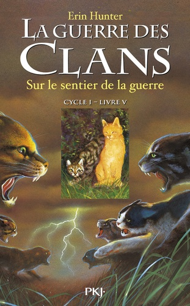
Les hors-séries de l'auteure
Les Royaumes de Feu: Bande dessinée
Une adaptation épique et fidèle du premier tome de la série, pour découvrir ou
redécouvrir en images l'univers fascinant des Royaumes de Feu.
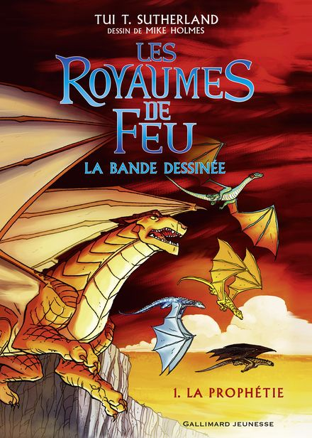
Tout un monde à créer
Construisez votre propre légende ! Vous aimez écrire ou dessiner ? Vous rêvez d'inventer des histoires
de dragons ? Suivez les conseils d'écriture de la grande Tui T. Sutherland pour donner vie à votre propre univers en roman
ou en bande dessinée !
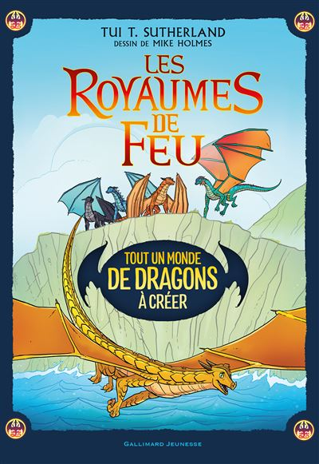
Au coeur du monde des Dragons
Comète, notre bibliothécaire en chef et archiviste de l'école de la montagne de Jade,
lance un appel à tous les clans à travers le monde : des palais aux forteresses, en passant par les villes reculées, les îles
lointaines et les plus petits villages. Faites entendre vos voix et racontez en détail votre vie de dragon, les légendes
fondatrices, les héros et les spécificités de votre tribu pour nos archives !
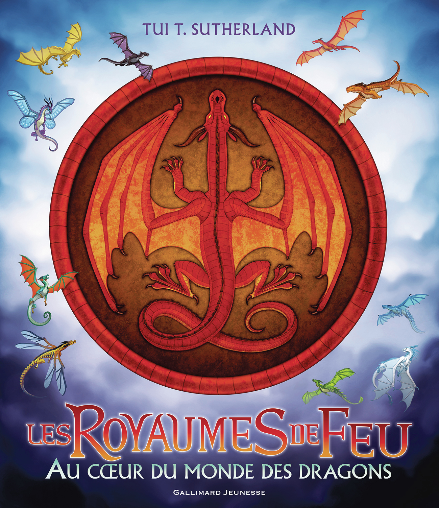